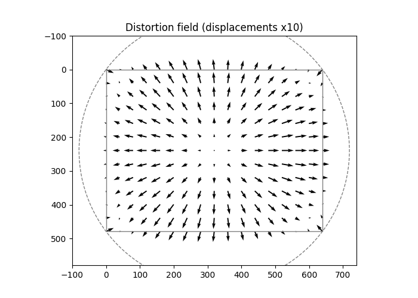

Note
Go to the end to download the full example code.
Distortion of a sensor with a Zernike model#
This example models the geometric distortion of an image sensor with Zernike polynomials, estimates the coefficients of the model from pairs of points, and inverts the distortion.
Distortion model#
The image has \(H \times W\) pixels, with the pixel coordinates \(X \in [0, W-1]\) (columns) and \(Y \in [0, H-1]\) (rows). The polynomials are defined on the disk that circumscribes the image:
and the distorted coordinates are:
The coefficients \(\lambda_j\) and \(\beta_j\) are in pixels.
import numpy
import matplotlib.pyplot as plt
import pyzernike
H, W = 480, 640
R = numpy.sqrt(((H - 1) / 2) ** 2 + ((W - 1) / 2) ** 2)
disk = dict(Rx=R, Ry=R, x0=(W - 1) / 2, y0=(H - 1) / 2)
order = 3
true_lambda = numpy.zeros(pyzernike.zernike_polynomials_count(order))
true_beta = numpy.zeros_like(true_lambda)
true_lambda[pyzernike.zernike_order_to_index(n=[3, 1, 2], m=[1, 1, 2])] = [-4.0, 1.5, 1.0] # pixels
true_beta[pyzernike.zernike_order_to_index(n=[3, 1, 2], m=[-1, -1, -2])] = [-4.0, 1.5, -0.5] # pixels
def distort(X, Y, coefficients_x, coefficients_y):
return X + pyzernike.xy_zernike_evaluate(coefficients_x, X, Y, **disk), Y + pyzernike.xy_zernike_evaluate(coefficients_y, X, Y, **disk)
X, Y = numpy.meshgrid(numpy.linspace(0, W - 1, 17), numpy.linspace(0, H - 1, 13))
Xd, Yd = distort(X, Y, true_lambda, true_beta)
plt.figure(figsize=(7, 5))
plt.quiver(X, Y, Xd - X, Yd - Y, angles="xy", scale_units="xy", scale=0.1)
plt.gca().add_patch(plt.Circle((disk["x0"], disk["y0"]), R, fill=False, linestyle="--", color="gray"))
plt.gca().add_patch(plt.Rectangle((0, 0), W - 1, H - 1, fill=False, color="gray"))
plt.xlim(-100, W + 99)
plt.ylim(H + 99, -100)
plt.gca().set_aspect("equal")
plt.title("Distortion field (displacements x10)")
plt.show()

Estimation of the coefficients#
The model is linear in the coefficients: given points \((X_k, Y_k)\) (for example the corners of a
calibration target) and their observed distorted positions, each component is fitted independently by
pyzernike.xy_zernike_fit().
rng = numpy.random.default_rng(0)
X_points = rng.uniform(0, W - 1, 300)
Y_points = rng.uniform(0, H - 1, 300)
Xd_observed, Yd_observed = distort(X_points, Y_points, true_lambda, true_beta)
Xd_observed += rng.normal(scale=0.1, size=300) # 0.1 pixel of noise
Yd_observed += rng.normal(scale=0.1, size=300)
estimated_lambda = pyzernike.xy_zernike_fit(X_points, Y_points, Xd_observed - X_points, order=order, **disk)
estimated_beta = pyzernike.xy_zernike_fit(X_points, Y_points, Yd_observed - Y_points, order=order, **disk)
print("True lambda: ", numpy.round(true_lambda, 2))
print("Estimated lambda:", numpy.round(estimated_lambda, 2))
print("True beta: ", numpy.round(true_beta, 2))
print("Estimated beta: ", numpy.round(estimated_beta, 2))
True lambda: [ 0. 0. 1.5 0. 0. 1. 0. 0. -4. 0. ]
Estimated lambda: [ 0. 0.03 1.5 -0.02 0.02 0.96 -0.07 0.03 -4. 0.05]
True beta: [ 0. 1.5 0. -0.5 0. 0. 0. -4. 0. 0. ]
Estimated beta: [-0.01 1.5 0. -0.51 -0.01 0.05 0.01 -3.99 -0.01 -0.01]
Correction of the distortion#
To correct an image, the undistorted position \((X, Y)\) of a distorted pixel \((X_d, Y_d)\) is needed. The model is inverted with the Newton method, with the Jacobian of the distortion:
where the derivatives of the sums of polynomials are given by pyzernike.xy_zernike_evaluate().
X_corrected, Y_corrected = Xd.copy(), Yd.copy() # Initial guess: no distortion
for iteration in range(5):
Xi, Yi = distort(X_corrected, Y_corrected, estimated_lambda, estimated_beta)
dX_dx, dX_dy = pyzernike.xy_zernike_evaluate(estimated_lambda, X_corrected, Y_corrected, [1, 0], [0, 1], default=0.0, **disk)
dY_dx, dY_dy = pyzernike.xy_zernike_evaluate(estimated_beta, X_corrected, Y_corrected, [1, 0], [0, 1], default=0.0, **disk)
J11, J12, J21, J22 = 1.0 + dX_dx, dX_dy, dY_dx, 1.0 + dY_dy
determinant = J11 * J22 - J12 * J21
rx, ry = numpy.nan_to_num(Xi - Xd), numpy.nan_to_num(Yi - Yd)
X_corrected -= (J22 * rx - J12 * ry) / determinant
Y_corrected -= (J11 * ry - J21 * rx) / determinant
print(f"Iteration {iteration}: maximum residual = {numpy.max(numpy.hypot(rx, ry)):.2e} pixels")
print(f"Maximum error on the undistorted positions: {numpy.max(numpy.hypot(X_corrected - X, Y_corrected - Y)):.3f} pixels")
Iteration 0: maximum residual = 3.51e+00 pixels
Iteration 1: maximum residual = 1.56e-03 pixels
Iteration 2: maximum residual = 5.56e-10 pixels
Iteration 3: maximum residual = 1.27e-13 pixels
Iteration 4: maximum residual = 5.68e-14 pixels
Maximum error on the undistorted positions: 0.062 pixels
Note
The polynomials are only defined inside the disk: the distorted positions must stay inside it, which is the case for a barrel distortion (the corners move towards the center). The remaining error on the undistorted positions comes from the noise on the estimated coefficients, not from the Newton method.
Total running time of the script: (0 minutes 0.097 seconds)